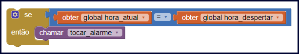
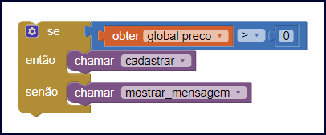

Nessa aula vamos aprender o que é uma estrutura condicional, qual é a sua importância e quando podemos usá-la no desenvolvimento de nossos aplicativos.
Você sabia que nós usamos estruturas condicionais todos os dias? Isso mesmo, você nem percebe mas usa estruturas condicionais a quase todo momento da sua vida para tomar decisões.
Por exemplo, imagine que você vai comprar um celular, se você encontrar um celular bonito, que tenha todas as funcionalidades que você precisa e que tenha um preço acessível, então você vai comprá-lo.
Neste exemplo nós usamos uma estrutura condicional simples, onde há uma condição que é “se o celular atender todas as necessidades”, e quando essa condição for atendida você toma uma ação, que nesse caso é comprar o celular.
Na aula de hoje nós vamos aprender como funcionam as estruturas condicionais que podemos usar no desenvolvimento de nossos aplicativos, você vai ver como elas são importantes e podem te ajudar a resolver vários problemas.
Estrutura condicional é o nome dado a uma sequência de comandos que permite que nosso aplicativo tome decisões e realize determinadas ações a partir da comparação de dados.
Vamos usar outro exemplo, o despertador do seu celular, a cada minuto ele usa uma estrutura condicional para decidir se deve ou não tocar o alarme.
Veja a seguir como podemos descrever a estrutura condicional usada pelo despertador do seu celular.
“se a hora atual for igual a hora de despertar então vou tocar o alarme”.
Todas as estruturas condicionais tem as seguintes características:
Veja como poderíamos fazer essa mesma estrutura condicional no App Inventor.
No App Inventor teríamos duas variáveis, uma com a hora atual do celular e a outra com a hora em que o despertador deve tocar, usamos o operador de comparação Igual ( = ) para comparar as duas variáveis, se as duas horas forem iguais então o aplicativo chama o método que vai tocar o alarme.
Além do exemplo de um despertador, podemos criar vários outros aplicativos que utilizam as estruturas condicionais.
Normalmente usamos as estruturas condicionais quando há algum comando no nosso aplicativo que não deve ser sempre executado. Imagine, que você está desenvolvendo um cadastro de produtos no seu aplicativo, no entanto o produto não pode ser cadastrado quando o seu preço for menor que zero.
Nesta situação, o comando para cadastrar o produto não deve ser sempre executado, mas deve ser executado apenas quando o preço do produto for maior que zero. Para fazer esse tipo de verificação usamos as estruturas condicionais.
Vamos pensar em mais um exemplo, digamos que você está desenvolvendo um software onde o usuário vai pagar seus boletos, o software deve calcular o valor dos juros que o usuário deve pagar nos boletos atrasados.
Neste exemplo você não pode calcular os juros em todos os casos, o cálculo dos juros deve ser executado apenas quando a data de vencimento do boleto já passou. Sendo assim, você pode usar a estrutura condicional para verificar se o boleto venceu antes de calcular seus juros.
Vamos usar o exemplo do cadastro de produtos, onde o preço do produto deve ser maior que zero para ser cadastrado, podemos descrever a estrutura condicional usada da seguinte forma: “se o preço do produto for maior que zero então vou cadastrar o produto.”
Em todas as estruturas condicionais iniciamos a frase com a palavra “se”, essa palavra identifica que estamos usando uma estrutura condicional, em inglês é usada a palavra “if”, como as linguagens de programação são escritas em inglês você sempre verá a estrutura condicional se iniciando com “if”.
Após isso temos uma condição: “preço do produto for maior que zero”, para criar as condições nós usamos os operadores de comparação, nesse caso foi usado o operador Maior ( > ) para verificar se o preço do produto é maior que zero.
Em seguida, temos a ação que deve ser executada caso a condição seja atendida, nesse exemplo temos o comando “cadastra o produto” que será executado apenas se o preço do produto for maior que zero.
Nós chamamos essa estrutura de estrutura condicional simples, neste mesmo exemplo nós podemos adicionar mais um comando na nossa estrutura para que o aplicativo execute uma outra ação quando a condição não for atendida.
Digamos que quando o preço do produto não for maior que zero o aplicativo deve exibir uma mensagem informando que o usuário deve alterar o preço do produto. Podemos deixar nossa estrutura da seguinte forma: “se o preço do produto for maior que zero então vou cadastrar o produto senão vou mostrar uma mensagem.”
Chamamos essa estrutura de estrutura condicional composta, pois agora foi adicionado o comando “senão”, indicando a ação que deve ser executada quando a condição não for atendida. O comando “senão” em inglês é representado pela palavra “else”.
Veja abaixo um simulado do uso de uma estrutura condicional composta no App Inventor verificando se o produto pode ou não ser cadastrado baseado no seu preço.
No App Inventor teríamos uma variável com o preço do produto, se o preço do produto for maior que o número zero então o método que cadastra o produto é chamado, caso contrário o aplicativo executa o método que exibe a mensagem informando ao usuário que o preço está errado.
Nessa aula nós aprendemos a usar a Estrutura Condicional, vimos que com essa ferramenta nossos aplicativos conseguem tomar decisões de acordo com as regras que criamos usando os operadores de comparação.
Na próxima aula vamos desenvolver um aplicativo utilizando as estruturas condicionais, assim você verá na prática como as estruturas condicionais realmente funcionam. Mas antes de iniciar a próxima aula, realize as atividades a seguir sobre as estruturas condicionais.
Caso tenha ficado com alguma dúvida não deixe de enviar sua pergunta, nós responderemos o mais rápido possível.
Até a próxima aula!
OLIVEIRA, Anderson Luiz. Estrutura condicional SE SENÃO. Blogson, 2019. Disponível em: https://www.blogson.com.br/estrutura-condicional-se-senao/. Acesso em 13 de agosto de 2019.
DEVMEDIA. Estruturas condicionais em Java. DEVMEDIA, 2019. Disponível em: https://www.devmedia.com.br/estruturas-condicionais-em-java/21135. Acesso em 13 de agosto de 2019.
W3SCHOOLS. JavaScript if else e else if. W3SCHOOLS.COM, 2019. Disponível em: https://www.w3schools.com/js/js_if_else.asp. Acesso em 13 de agosto de 2019.
Mozilla Foundation. if...else. MDN Web Docs, 2019. Disponível em: https://developer.mozilla.org/pt-BR/docs/Web/JavaScript/Reference/Statements/if...else. Acesso em 13 de agosto de 2019.